DDOORH
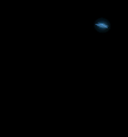
40 phases distinctes · 1.333 s
Prévisualisations animées sans compression destructive, sur fond noir. Les vignettes sont ajustées à leur case ; en jeu, taille et ancrage natifs conservés. Doublons retirés avant Apollo, durée globale conservée.

40 phases distinctes · 1.333 s
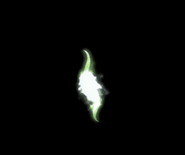
76 phases distinctes · 2.533 s
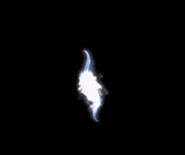
76 phases distinctes · 2.533 s
40 phases distinctes · 1.333 s
40 phases distinctes · 1.333 s
48 phases distinctes · 1.600 s
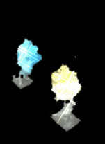
32 phases distinctes · 1.067 s
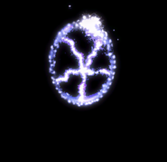
238 phases distinctes · 7.933 s
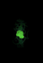
24 phases distinctes · 0.800 s
36 phases distinctes · 1.200 s
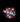
42 phases distinctes · 1.400 s
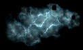
40 phases distinctes · 1.333 s
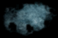
40 phases distinctes · 1.333 s
32 phases distinctes · 1.067 s
62 phases distinctes · 2.067 s
128 phases distinctes · 4.267 s
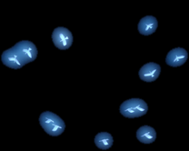
100 phases distinctes · 3.333 s
90 phases distinctes · 3.000 s
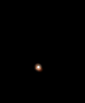
98 phases distinctes · 3.267 s
36 phases distinctes · 1.200 s
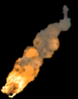
14 phases distinctes · 0.467 s
102 phases distinctes · 3.400 s
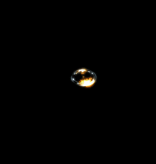
44 phases distinctes · 1.467 s
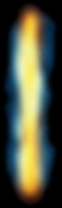
20 phases distinctes · 0.667 s
118 phases distinctes · 3.933 s
96 phases distinctes · 3.200 s
60 phases distinctes · 2.000 s
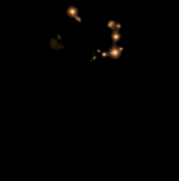
46 phases distinctes · 1.533 s
172 phases distinctes · 5.733 s
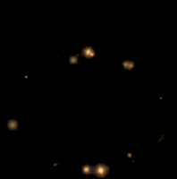
46 phases distinctes · 1.533 s
48 phases distinctes · 1.600 s
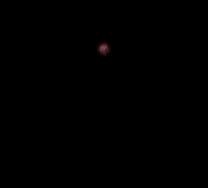
48 phases distinctes · 1.600 s
70 phases distinctes · 2.333 s